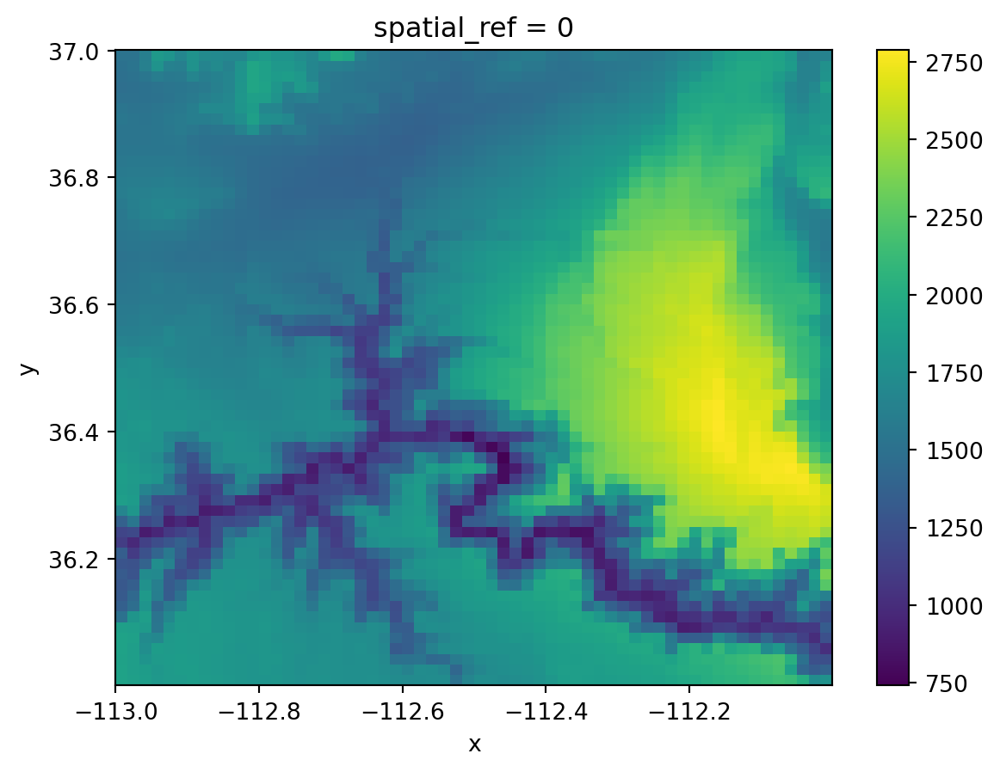

import os
import numpy as np
import xarray as xr
import rioxarray as rioxr20 Raster manipulation
In this lesson we will learn how to perform some global and local operations on our raster. We will also go over customizations for plotting raster data and review the Python for loop.
20.1 Data
We will use data from the Copernicus Digital Elevation Model (DEM). This dataset ris based on radar satellite data measuring the relative height of Earth’s surface. The Copernicus DEM is available at 30-meter and 90-meter resolution. The data prepared for this class is a tile of 1°x1° latitude/longitude form the Copernicus DEM at 90-meter resolution over the Grand Canyon in the US. Each pixel represents vertical units measured in meters. The data was accessed via the Microsoft’s Planetary Computer Copernicus DEM GLO-30 data repository
Click here to access the Copernicus DEM complete product Handbook.
20.2 Import data
Let’s start by loading the libraries we’ll use:
Exercise
- Use
osto createa file path to the ‘grand_canyon_DEM.tif’ file and import the raster into a variable calledgc. - Plot the raster, check the CRS, and create a histogram with updated bin numbers.
20.3 Dropping a dimension
Notice that our raster has an unnecessary extra dimension: band.
gc<xarray.DataArray (band: 1, y: 1200, x: 1200)>
array([[[1539.077 , 1540.6287, ..., 1557.3568, 1552.1139],
[1537.7278, 1538.4757, ..., 1559.02 , 1555.9811],
...,
[1947.7771, 1943.48 , ..., 1956.2341, 1966.1176],
[1938.799 , 1933.4049, ..., 2055.6274, 2039.6412]]], dtype=float32)
Coordinates:
* band (band) int64 1
* x (x) float64 -113.0 -113.0 -113.0 ... -112.0 -112.0 -112.0
* y (y) float64 37.0 37.0 37.0 37.0 37.0 ... 36.0 36.0 36.0 36.0
spatial_ref int64 0
Attributes:
AREA_OR_POINT: Point
scale_factor: 1.0
add_offset: 0.0xarray.DataArray
- band: 1
- y: 1200
- x: 1200
- 1.539e+03 1.541e+03 1.541e+03 ... 2.153e+03 2.056e+03 2.04e+03
array([[[1539.077 , 1540.6287, ..., 1557.3568, 1552.1139], [1537.7278, 1538.4757, ..., 1559.02 , 1555.9811], ..., [1947.7771, 1943.48 , ..., 1956.2341, 1966.1176], [1938.799 , 1933.4049, ..., 2055.6274, 2039.6412]]], dtype=float32) - band(band)int641
array([1])
- x(x)float64-113.0 -113.0 ... -112.0 -112.0
array([-113. , -112.999167, -112.998333, ..., -112.0025 , -112.001667, -112.000833]) - y(y)float6437.0 37.0 37.0 ... 36.0 36.0 36.0
array([37. , 36.999167, 36.998333, ..., 36.0025 , 36.001667, 36.000833])
- spatial_ref()int640
- crs_wkt :
- GEOGCS["WGS 84",DATUM["WGS_1984",SPHEROID["WGS 84",6378137,298.257223563,AUTHORITY["EPSG","7030"]],AUTHORITY["EPSG","6326"]],PRIMEM["Greenwich",0,AUTHORITY["EPSG","8901"]],UNIT["degree",0.0174532925199433,AUTHORITY["EPSG","9122"]],AXIS["Latitude",NORTH],AXIS["Longitude",EAST],AUTHORITY["EPSG","4326"]]
- semi_major_axis :
- 6378137.0
- semi_minor_axis :
- 6356752.314245179
- inverse_flattening :
- 298.257223563
- reference_ellipsoid_name :
- WGS 84
- longitude_of_prime_meridian :
- 0.0
- prime_meridian_name :
- Greenwich
- geographic_crs_name :
- WGS 84
- grid_mapping_name :
- latitude_longitude
- spatial_ref :
- GEOGCS["WGS 84",DATUM["WGS_1984",SPHEROID["WGS 84",6378137,298.257223563,AUTHORITY["EPSG","7030"]],AUTHORITY["EPSG","6326"]],PRIMEM["Greenwich",0,AUTHORITY["EPSG","8901"]],UNIT["degree",0.0174532925199433,AUTHORITY["EPSG","9122"]],AXIS["Latitude",NORTH],AXIS["Longitude",EAST],AUTHORITY["EPSG","4326"]]
- GeoTransform :
- -113.00041666666667 0.0008333333333333339 0.0 37.000416666666666 0.0 -0.0008333333333333339
array(0)
- AREA_OR_POINT :
- Point
- scale_factor :
- 1.0
- add_offset :
- 0.0
This is making this datsets three-dimensional when it is not needed. We can clean this xarray.DataArray a bit by:
using the
squeeze()method. If we don’t pass any parameters, thensqueeze()gets rid of all dimensions with length one, and thengetting rid of the associated coordinates for this dimension. We can do this using the
xarray.DataArraydrop()method and specifying the name of the coordinates we want to remove, in this case ‘band’.
Let’s do this:
# original dimensions and coordinates
print(gc.dims, gc.coords,'\n')
# remove length 1 dimension (band)
gc = gc.squeeze()
print(gc.dims, gc.coords,'\n')
# remove coordinates associated to band
gc = gc.drop('band')
print(gc.dims, gc.coords)('band', 'y', 'x') Coordinates:
* band (band) int64 1
* x (x) float64 -113.0 -113.0 -113.0 ... -112.0 -112.0 -112.0
* y (y) float64 37.0 37.0 37.0 37.0 37.0 ... 36.0 36.0 36.0 36.0
spatial_ref int64 0
('y', 'x') Coordinates:
band int64 1
* x (x) float64 -113.0 -113.0 -113.0 ... -112.0 -112.0 -112.0
* y (y) float64 37.0 37.0 37.0 37.0 37.0 ... 36.0 36.0 36.0 36.0
spatial_ref int64 0
('y', 'x') Coordinates:
* x (x) float64 -113.0 -113.0 -113.0 ... -112.0 -112.0 -112.0
* y (y) float64 37.0 37.0 37.0 37.0 37.0 ... 36.0 36.0 36.0 36.0
spatial_ref int64 020.4 Global information
To get a better sense of our raster data we can apply common numpy functions to extract information from the xarray.DataArray underlying np.array.
For example, we can get the maximum across all the xarray.DataArray’s values by using the max() method:
# get the maximum elevation value (get an xarray.DataArray)
gc.max()<xarray.DataArray ()>
array(2808.80053711)
Coordinates:
spatial_ref int64 0xarray.DataArray
- 2.809e+03
array(2808.80053711)
- spatial_ref()int640
- crs_wkt :
- GEOGCS["WGS 84",DATUM["WGS_1984",SPHEROID["WGS 84",6378137,298.257223563,AUTHORITY["EPSG","7030"]],AUTHORITY["EPSG","6326"]],PRIMEM["Greenwich",0,AUTHORITY["EPSG","8901"]],UNIT["degree",0.0174532925199433,AUTHORITY["EPSG","9122"]],AXIS["Latitude",NORTH],AXIS["Longitude",EAST],AUTHORITY["EPSG","4326"]]
- semi_major_axis :
- 6378137.0
- semi_minor_axis :
- 6356752.314245179
- inverse_flattening :
- 298.257223563
- reference_ellipsoid_name :
- WGS 84
- longitude_of_prime_meridian :
- 0.0
- prime_meridian_name :
- Greenwich
- geographic_crs_name :
- WGS 84
- grid_mapping_name :
- latitude_longitude
- spatial_ref :
- GEOGCS["WGS 84",DATUM["WGS_1984",SPHEROID["WGS 84",6378137,298.257223563,AUTHORITY["EPSG","7030"]],AUTHORITY["EPSG","6326"]],PRIMEM["Greenwich",0,AUTHORITY["EPSG","8901"]],UNIT["degree",0.0174532925199433,AUTHORITY["EPSG","9122"]],AXIS["Latitude",NORTH],AXIS["Longitude",EAST],AUTHORITY["EPSG","4326"]]
- GeoTransform :
- -113.00041666666667 0.0008333333333333339 0.0 37.000416666666666 0.0 -0.0008333333333333339
array(0)
Notice that the output for this method is another xarray.DataArray. In general, methods that reduce or subset an xarray.DataArray will always return another xarray.DataArray. To extract the value from a 1x1 xarray.DataArray as a number we use the .item() method:
# get the maximum elevation value as a number
gc.max().item()2808.80053710937520.5 f-strings
So far we have printed variables using string concatenation inside the print() function. This means that we write commas between every string and variable we want to print, and then the print function concatenates these into a single string. For example:
# minimum elevation
# print via concatenation
print("Minimum elevation: ", gc.min().item())Minimum elevation: 528.0Another popular way of mixing strings and variables in print statements is by creating an f-string which stands for “formatted string”. The simplest syntax for an f-string is:
f" some text {replace}"where replace can be a variable, an expression, or a function or method call. For example:
# f-string with mean elevation
f"Mean elevation: {gc.mean().item()}"'Mean elevation: 1764.859375'We just created a string replacing the value inside the curly brackets {}. Notice the computation is occurring in real time as the string gets made and there’s no need to define any extra variables.
One of the advantages of using f-strings is that they offer customization for formatting the output, without the need to use extra functions. For example, if we want to print the median value of our raster rounded to two decimals we can do:
# median elevation, rounded to two decimals
# print via f-string formatting
print(f"Median elevation: {gc.median().item():.2f}")Median elevation: 1726.15Some extra resources about using f-string formatting: - Real Python - Python’s F-String for String Interpolation and Formatting - Python documentation- Format Specification Mini-Language
20.6 Aggregation
Let’s go back to our raster. Rasters with high spatial resolution can offer great insight into fine-scale patterns, but can also be challenging to process due to their size. In these cases, it can be useful to use an aggregation method to spatially downsample and obtain a raster with a coarser resolution.
To spatially downsample an xarray.DataArray we use the coarsen() method followed by an aggreagator function. The general syntax to coarsen a 2-dimensional :
xdataarray.coarsen(x=x_winside, y=y_winside).aggr()where:
xdataarrayis a 2-dimensionalxarray.DataArraywith dimensionsxandy.xandyare the names dimensions of thexarray.DataArray(these could have other names likelon/lat)x_winsideandy_winsideare the dimensions of the window used to make the aggregation.aggr()is an aggregator function, this is the function which will be applied to each window. Examples aremin(),max(),sum()andmean().
Example
Suppose we want to coarsen our Grand Canyon elevation raster from 1200x1200 pixels to a raster of 60x60 pixels where by calculating the maximun at each window. Remember the windows are non-overlapping, so we will obtain one pixel per window. A quick division tells us that to got from 1200x1200 to 60x60 we will need to use a 20x20 window. The aggregator function on each of this window will be max(). Our call looks like this:
# coarsen to a 60x60 raster calculating the mean in each window
gc_coarse = gc.coarsen(x=20,y=20).mean()
gc_coarse<xarray.DataArray (y: 60, x: 60)>
array([[1517.0162, 1521.1807, 1614.4452, ..., 1602.1825, 1632.0491,
1647.5757],
[1500.3119, 1524.7173, 1622.7725, ..., 1643.7584, 1640.7683,
1764.919 ],
[1489.5236, 1512.9801, 1547.7728, ..., 1641.8906, 1645.771 ,
1789.8911],
...,
[1914.765 , 1878.8464, 1802.3844, ..., 1501.9019, 1236.4778,
1229.7344],
[1917.3566, 1879.9749, 1859.9656, ..., 1414.1925, 1329.0782,
1388.1653],
[1919.9823, 1890.4172, 1868.7794, ..., 2007.9066, 1726.9645,
1778.2673]], dtype=float32)
Coordinates:
* x (x) float64 -113.0 -113.0 -113.0 ... -112.0 -112.0 -112.0
* y (y) float64 36.99 36.98 36.96 36.94 ... 36.06 36.04 36.03 36.01
spatial_ref int64 0
Attributes:
AREA_OR_POINT: Point
scale_factor: 1.0
add_offset: 0.0xarray.DataArray
- y: 60
- x: 60
- 1.517e+03 1.521e+03 1.614e+03 ... 2.008e+03 1.727e+03 1.778e+03
array([[1517.0162, 1521.1807, 1614.4452, ..., 1602.1825, 1632.0491, 1647.5757], [1500.3119, 1524.7173, 1622.7725, ..., 1643.7584, 1640.7683, 1764.919 ], [1489.5236, 1512.9801, 1547.7728, ..., 1641.8906, 1645.771 , 1789.8911], ..., [1914.765 , 1878.8464, 1802.3844, ..., 1501.9019, 1236.4778, 1229.7344], [1917.3566, 1879.9749, 1859.9656, ..., 1414.1925, 1329.0782, 1388.1653], [1919.9823, 1890.4172, 1868.7794, ..., 2007.9066, 1726.9645, 1778.2673]], dtype=float32) - x(x)float64-113.0 -113.0 ... -112.0 -112.0
array([-112.992083, -112.975417, -112.95875 , -112.942083, -112.925417, -112.90875 , -112.892083, -112.875417, -112.85875 , -112.842083, -112.825417, -112.80875 , -112.792083, -112.775417, -112.75875 , -112.742083, -112.725417, -112.70875 , -112.692083, -112.675417, -112.65875 , -112.642083, -112.625417, -112.60875 , -112.592083, -112.575417, -112.55875 , -112.542083, -112.525417, -112.50875 , -112.492083, -112.475417, -112.45875 , -112.442083, -112.425417, -112.40875 , -112.392083, -112.375417, -112.35875 , -112.342083, -112.325417, -112.30875 , -112.292083, -112.275417, -112.25875 , -112.242083, -112.225417, -112.20875 , -112.192083, -112.175417, -112.15875 , -112.142083, -112.125417, -112.10875 , -112.092083, -112.075417, -112.05875 , -112.042083, -112.025417, -112.00875 ]) - y(y)float6436.99 36.98 36.96 ... 36.03 36.01
array([36.992083, 36.975417, 36.95875 , 36.942083, 36.925417, 36.90875 , 36.892083, 36.875417, 36.85875 , 36.842083, 36.825417, 36.80875 , 36.792083, 36.775417, 36.75875 , 36.742083, 36.725417, 36.70875 , 36.692083, 36.675417, 36.65875 , 36.642083, 36.625417, 36.60875 , 36.592083, 36.575417, 36.55875 , 36.542083, 36.525417, 36.50875 , 36.492083, 36.475417, 36.45875 , 36.442083, 36.425417, 36.40875 , 36.392083, 36.375417, 36.35875 , 36.342083, 36.325417, 36.30875 , 36.292083, 36.275417, 36.25875 , 36.242083, 36.225417, 36.20875 , 36.192083, 36.175417, 36.15875 , 36.142083, 36.125417, 36.10875 , 36.092083, 36.075417, 36.05875 , 36.042083, 36.025417, 36.00875 ]) - spatial_ref()int640
- crs_wkt :
- GEOGCS["WGS 84",DATUM["WGS_1984",SPHEROID["WGS 84",6378137,298.257223563,AUTHORITY["EPSG","7030"]],AUTHORITY["EPSG","6326"]],PRIMEM["Greenwich",0,AUTHORITY["EPSG","8901"]],UNIT["degree",0.0174532925199433,AUTHORITY["EPSG","9122"]],AXIS["Latitude",NORTH],AXIS["Longitude",EAST],AUTHORITY["EPSG","4326"]]
- semi_major_axis :
- 6378137.0
- semi_minor_axis :
- 6356752.314245179
- inverse_flattening :
- 298.257223563
- reference_ellipsoid_name :
- WGS 84
- longitude_of_prime_meridian :
- 0.0
- prime_meridian_name :
- Greenwich
- geographic_crs_name :
- WGS 84
- grid_mapping_name :
- latitude_longitude
- spatial_ref :
- GEOGCS["WGS 84",DATUM["WGS_1984",SPHEROID["WGS 84",6378137,298.257223563,AUTHORITY["EPSG","7030"]],AUTHORITY["EPSG","6326"]],PRIMEM["Greenwich",0,AUTHORITY["EPSG","8901"]],UNIT["degree",0.0174532925199433,AUTHORITY["EPSG","9122"]],AXIS["Latitude",NORTH],AXIS["Longitude",EAST],AUTHORITY["EPSG","4326"]]
- GeoTransform :
- -113.00041666666667 0.0008333333333333339 0.0 37.000416666666666 0.0 -0.0008333333333333339
array(0)
- AREA_OR_POINT :
- Point
- scale_factor :
- 1.0
- add_offset :
- 0.0
# inspect old and coarsened resolution
print(f"old resolution: {gc.rio.width}x{gc.rio.height}")
print(f"coarse resolution: {gc_coarse.rio.width}x{gc_coarse.rio.height}")
gc_coarse.plot()old resolution: 1200x1200
coarse resolution: 60x60<matplotlib.collections.QuadMesh at 0x7f4c4bb4c340>
Exercise
Downsample the elevation raster into a 240x240 raster by taking the average over windows of the appropriate size.
Use an f-string to check whether the bounds of the rasters have changed.